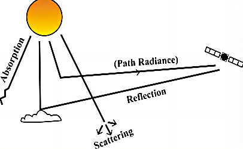
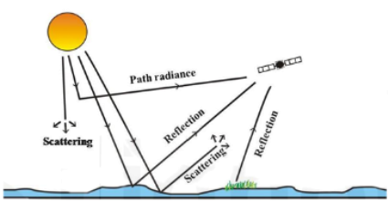
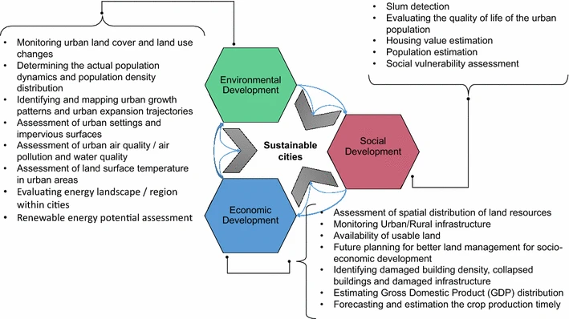

1 Week1 An Introduction to Remote Sensing
1.1 Summary
1.1.1 Mind Map
This is a hand-drawn mind map for Lecture 1, which I find exceptionally beneficial for summarizing topics. This week’s lecture introduced the fundamental aspects of remote sensing and its applications.
Figure: Mind map for Lecture 1
1.1.2 EMR interactions with the Earth’s atmosphere
Electromagnetic radiation (EMR) interacting with the Earth’s atmosphere undergoes three main processes: refraction, scattering, and absorption.

Figure: Interaction of EMR in the Atmosphere
Source: Pokhrel, 2017
Refraction occurs as EMR transitions from the vacuum of outer space (with virtually zero density) into the denser atmosphere, causing the radiation to bend and slow due to the differing refractive indices of space and the atmosphere.
Scattering, the redirection of photon paths, occurs when photons interact with atmospheric components. Rayleigh scattering is due to interactions with particles much smaller than the wavelength of the radiation (e.g., N2, O2, CO2 gases), resulting in the blue sky. Mie scattering occurs with particles about the same size as the radiation wavelength (e.g., smoke, dust), and larger particles cause additional scattering types.
Absorption happens when atmospheric gases (primarily H2O, CO2, and O3) absorb photons, converting them into molecular vibrations. These are later re-emitted at longer wavelengths, often outside the optical remote sensing spectrum but relevant for thermal remote sensing. Absorption efficiency varies with the radiation’s wavelength, aligning with the absorbing gas’s resonant frequency, influenced by its molecular structure.
1.1.3 EMR interactions with the Earth’s surface
Once EMR penetrates the atmosphere without being absorbed or scattered away, it interacts with the Earth’s surface. At this point, each photon either gets absorbed by the surface or reflected back towards space. The likelihood of reflection over absorption is determined by the surface’s reflectance, which varies with both the surface material and the radiation’s wavelength. Each type of surface material displays a unique spectral signature, defining the proportion of radiation it reflects across different wavelengths.
Spectral signatures also facilitate geological surveying by identifying minerals with distinct reflectance patterns, indicating various sub-surface conditions. Finally, EMR reflected from the Earth’s surface must navigate back through the atmosphere, encountering refraction, scattering, and absorption once more before detection by space-based sensors. This complexity underlines the advantage of airborne sensors, which can measure reflected EMR without it having to traverse the atmosphere a second time, offering clearer data for analysis.

Figure: Interaction of EMR with Earth’s surface.
Source: Pokhrel, 2017
1.2 Applications
Remote sensing plays a pivotal role in urban sustainability, especially in the geospatial assessment of renewable energy technologies such as wind, solar, wave, biomass, and geothermal energy. For instance, Gooding et al. utilized LiDAR digital surface models to estimate the physical and socio-economic potential of rooftop photovoltaic (PV) generation, while Sun et al. developed a regional model and its economic feasibility for solar PV potential using digital elevation models.
In terms of exploring the potential of geothermal resources, Van Der Meer et al. published a comprehensive review on the potential of remote sensing technologies. Ahamed et al. reviewed the application of remote sensing in assessing the biophysical characteristics of energy crops for managing biomass at specific sites. Furthermore, Rusu and Onea evaluated wind and wave energy resources along the Caspian Sea coast, and Kaiser and Ahmed derived the spatial distribution of hot springs, lineages, and geothermal zones for renewable energy technology applications based on data from multiple satellites.

Figure: Key urban sustainability applications of remote sensing
Source: Kadhim,et al.(2016)
1.3 Reflections
Reflecting on this week’s lessons, I’m struck by its vast potential,considering that I have never specially learned about remote sensing. The dive into how electromagnetic waves interact with the Earth’s surface and atmosphere opened my eyes to the complexities of remote sensing. Exploring the four resolutions of remote sensing data—spectral, spatial, temporal, and radiometric—highlighted the critical role of constraints, whether environmental or sensor-related, in shaping our data choices. This understanding challenges me to think critically about the data I use and its suitability for specific applications. The lesson reinforced the importance of considering these interactions and resolutions in my future work, inspiring me to explore innovative ways to overcome these constraints for more effective data utilization in environmental studies.